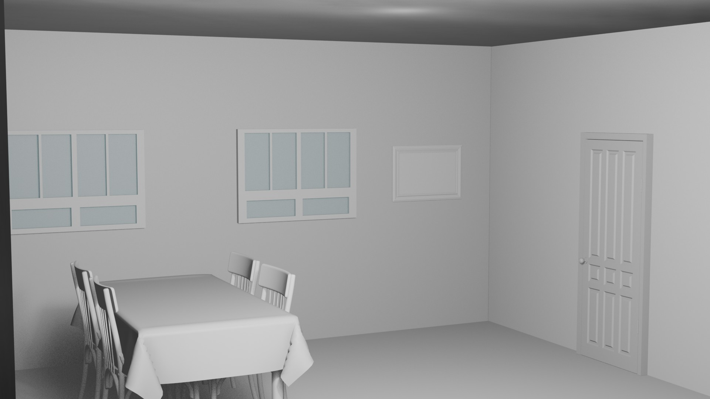
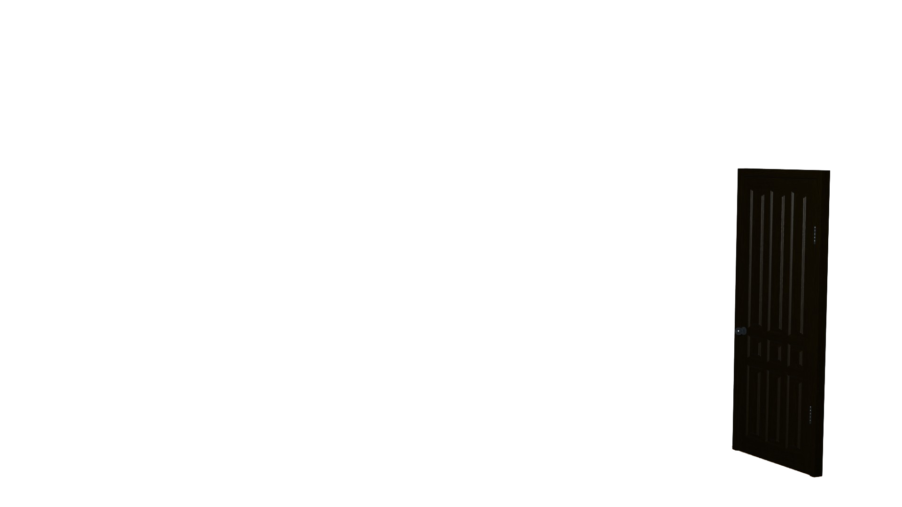
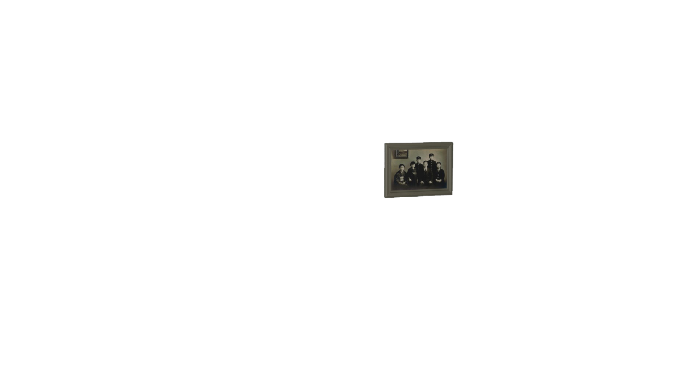
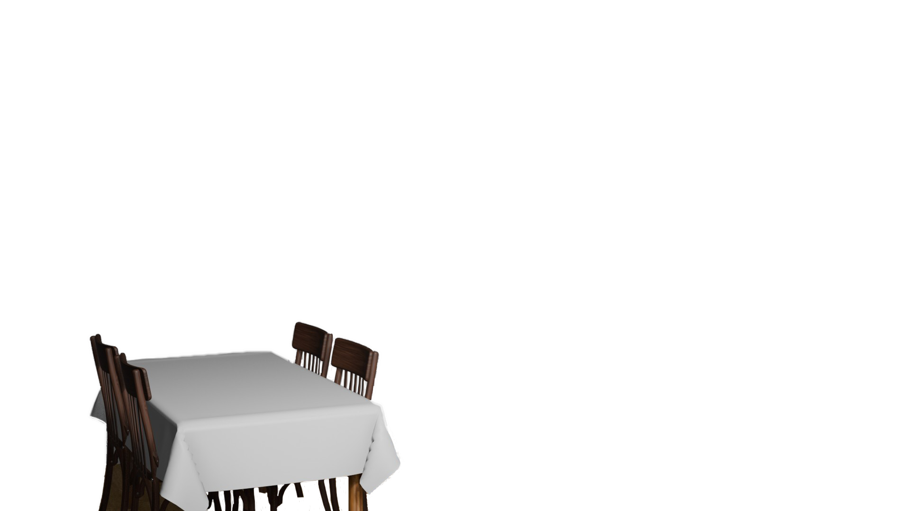

Fouillez la pièce pour découvrir des anecdotes liées à l'artiste.




Yayoi Kusama décrit sa première hallucination avec une précision frappante.
À l’âge de dix ans, lors d’un repas de famille, elle voit les motifs fleuris de la nappe se détacher et se propager autour d’elle. Les fleurs se multiplient, recouvrent la table, puis ses mains, ses bras, son corps tout entier. Les murs, le plafond, et même le visage de ses proches finissent engloutis par ces formes envahissantes.
Kusama raconte la peur immense qu’elle a ressentie ce jour-là. Ce moment marque le début de son lien indissociable entre hallucination et création, un thème qu’elle explorera toute sa vie à travers ses pois, ses miroirs et ses œuvres infinies.
Yayoi Kusama entretient depuis l’enfance une relation difficile avec sa famille, et plus particulièrement avec sa mère. Issue d’un milieu traditionnel japonais, sa mère n’a jamais accepté son attirance pour l’art, ni son désir d’indépendance, et lui promet une vie d’épouse au foyer. Enfant, Kusama est contrainte d’espionner son père lors de ses infidélités, une expérience traumatisante qui renforce son isolement et son besoin de s’exprimer autrement.
Plus tard, sa mère lui finance le voyage vers New York, mais à la seule condition qu’elle ne revienne jamais. Longtemps, Kusama sera considérée comme une honte pour sa famille, mais cette mise à l’écart deviendra aussi la clé de sa liberté artistique.